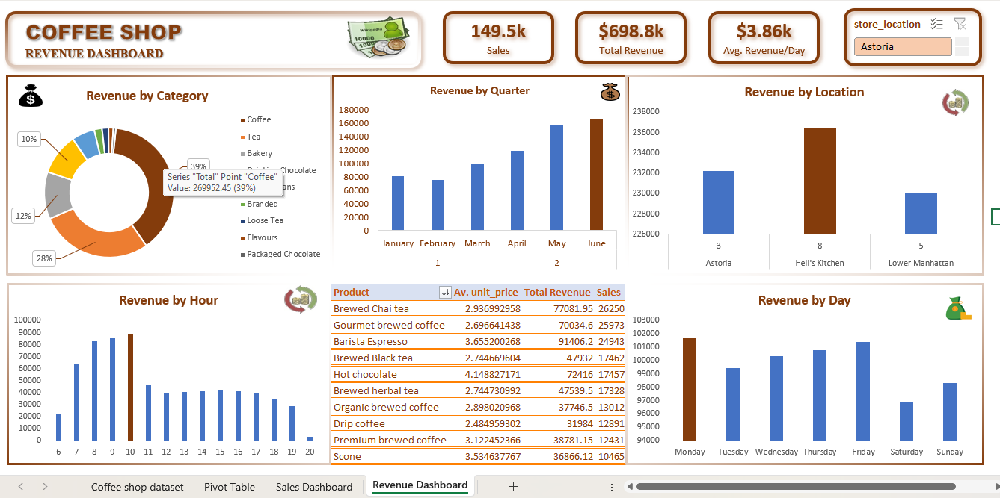

Excel / Fictional business / training dataset
Maven Roasters: coffee sales
Six months of sales across three New York City stores, translated into product and staffing priorities.

Business question
Which products, locations and trading hours deserve the most attention? The dashboard explores January to June 2023 for a fictitious coffee business; these are practice data, not results from a real client.
Approach
The Excel dashboard summarizes revenue by month, product category, store, weekday and hour. The analysis below reads the saved dashboard view; it does not recalculate the source workbook.
What the dashboard shows
Revenue totals approximately $698.8K. Coffee contributes 39% and tea 28% of revenue, making beverages the core of the sales mix. Store revenue is comparatively balanced: about $236K at Hell's Kitchen, $232K at Astoria and $230K in Lower Manhattan. The hourly chart peaks around 10 a.m. Monthly revenue is higher in June than January, with a dip in February.
Recommended decisions
Prioritize coffee and tea availability during the morning peak. Compare staffing coverage with the 8-10 a.m. demand window before changing shifts. Investigate the later-month revenue increase by separating transaction growth, basket size and trading days. Test bakery cross-selling with an explicit margin and attachment-rate measure.
Interpretation limits
Revenue does not establish profitability or the impact of a recommendation. The chart labelled Revenue by Quarter displays individual months; this write-up treats it as monthly. Saved slicer labels do not provide reproducible filter state. No source workbook is attached to the public project, so transaction counts and calculations have not been independently rerun.
Source: My original Maven Showcase project ↗. Analysis accompanies the published dashboard; source workbooks are not included.